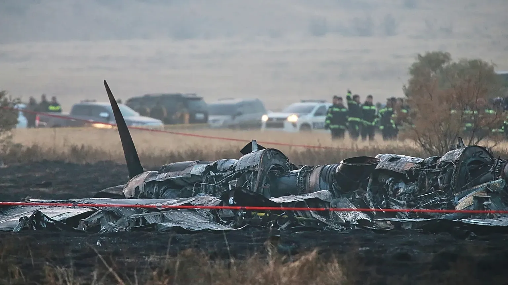

Turkish military transport plane crashes near Georgia border, 20 dead
2025, November 18

Turkish military transport plane crashes near Georgia border, 20 dead
2025, November 18
Georgia
On November 11, 2025, a Turkish Air Force C-130 Hercules transport plane crashed near the Georgia–Azerbaijan border, killing all 20 military personnel on board. The aircraft had departed from Azerbaijan, at 14:19 local time, and vanished from radars 27 minutes later while flying over Georgian airspace. Georgian authorities confirmed the wreckage was found near the border region. Turkey's Defense Minister Yaşar Güler announced that all soldiers were killed. The cause of the crash remains under investigation, with Turkish and Georgian officials cooperating in the inquiry.On November 11, the C-130 Hercules, a widely used military cargo plane designed for transport missions, departed from Ganja International Airport in Azerbaijan, bound for Merzifon Air Base in Turkey. Military personnel onboard the aircraft included an F-16 fighter jet maintenance team who were returning home after participation in celebrations of Azerbaijan's Victory Day. 27 minutes after takeoff, communication was lost, while the airplane was flying over Georgian airspace. The crash occurred in the Sighnaghi municipality, Kakheti region, near the Azerbaijan–Georgia border.
Eyewitnesses reported that the aircraft broke apart mid-air, with the tail section separating before the plane spiraled down; that has been compared by Reuters with the 2017 United States Marine Corps KC-130 crash where all sixteen occupants of the Hercules transport were killed after the 24 years old aircraft, which lost radar contact, was seen with a smoking engine descending in a flat spin. Georgian authorities confirmed the wreckage was found near the border region. On November 12, the flight recorder (black box) was recovered to assist in the investigation.
According to Georgian authorities and Turkish officials, the remains of the military personnel traveling from Azerbaijan to Turkey were recovered by November 13.
Following the crash, Turkey temporarily grounded its fleet of C-130 planes on November 13 as a precautionary measure. The model has been in service for decades and is known for its durability, but investigations are ongoing to determine whether technical issues contributed to the accident.
By November 14, Turkish and Georgian officials continued joint inquiries. A funeral was held on Friday at the Murted Air Base near Ankara, which was attended by the families of the deceased, fellow soldiers, and officials, as well as political figures. NATO expressed condolences and support.
The cause of the crash remains undetermined.